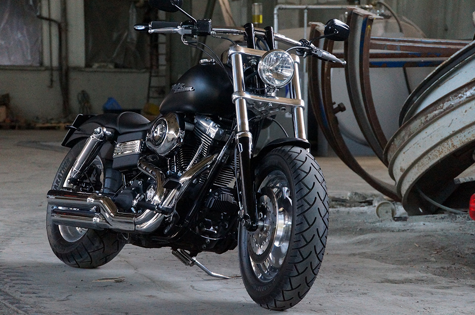

Harley Davidson Dyna Fat Bob

El poderoso rugido que desafía las convenciones
Una motocicleta imponente y audaz que redefine el concepto de "muscle bike"
La Harley Davidson Dyna Fat Bob es mucho más que una motocicleta. Es una declaración de fuerza, audacia y rebeldía sobre dos ruedas. Con su diseño imponente, su potencia descomunal y su carácter indomable, esta máquina americana desafía las convenciones y establece nuevos estándares en el mundo de las motocicletas.
La Dyna Fat Bob presenta un estilo agresivo y musculoso que no pasa desapercibido. Desde su robusto chasis hasta su manillar ancho y elevado, esta motocicleta irradia una presencia dominante en la carretera. Su faro doble y su icónico depósito de combustible en forma de lágrima aportan una apariencia única y reconocible, mientras que las llantas anchas y los neumáticos de perfil bajo agregan un toque de deportividad y agilidad.
Pero la Dyna Fat Bob no se trata solo de apariencias. Bajo su exterior intimidante se encuentra un motor potente y capaz. Equipada con un motor Twin Cam 103 de 1690 cc, esta bestia de la carretera ofrece una potencia y un par motor impresionantes que te dejarán sin aliento. Cada aceleración se convierte en una experiencia visceral y emocionante, y el sonido ronco y atronador de su escape Vance & Hines deja claro que esta motocicleta no pasa desapercibida.
La maniobrabilidad y el control son también puntos fuertes de la Dyna Fat Bob. Gracias a su suspensión delantera invertida y a su suspensión trasera regulable, la motocicleta ofrece una conducción suave y precisa, incluso en las curvas más desafiantes. Los frenos de alto rendimiento, tanto en la parte delantera como en la trasera, brindan una capacidad de frenado confiable y seguro, asegurando un control total en cualquier situación.
Además, la Dyna Fat Bob se adapta a las necesidades y preferencias de cada conductor. Con una amplia gama de accesorios y opciones de personalización disponibles, los propietarios pueden agregar su toque personal y hacer que esta motocicleta sea verdaderamente única. Desde manillares hasta asientos, sistemas de escape y estilos de pintura personalizados, las posibilidades son casi ilimitadas.
En resumen, la Harley Davidson Dyna Fat Bob es una motocicleta que desafía las expectativas y redefine el concepto de "muscle bike". Con su presencia imponente, su potencia aplastante y su capacidad de personalización, esta motocicleta te invita a romper las barreras y experimentar la verdadera libertad sobre dos ruedas. Si buscas una máquina que combine fuerza, estilo y una dosis de rebeldía, la Dyna Fat Bob está lista para desatar el poderoso rugido que llevas dentro.
La motocicleta Harley Davidson Dyna Fat Bob presenta una serie de características distintivas que la han convertido en una favorita entre los amantes de las motocicletas de estilo cruiser. A continuación se detallan algunas de sus características principales:
Diseño imponente: La Dyna Fat Bob destaca por su diseño agresivo y musculoso. Desde su robusto chasis hasta su faro doble y su tanque de combustible en forma de lágrima, esta motocicleta irradia una presencia dominante en la carretera. Sus líneas limpias y su acabado cromado le otorgan un aspecto llamativo y poderoso.
Motor potente: Esta motocicleta está equipada con un motor Twin Cam 103 de 1690 cc, que ofrece una potencia impresionante y un par motor sólido. Este motor V-Twin proporciona una aceleración rápida y un rendimiento excepcional en carretera, brindando una experiencia de conducción emocionante y dinámica.
Sistema de escape distintivo: La Dyna Fat Bob cuenta con un sistema de escape Vance & Hines, que no solo mejora el rendimiento del motor, sino que también emite un sonido ronco y atronador que añade carácter y presencia a cada viaje. Este sonido distintivo es una firma de la experiencia Harley Davidson.
Manejo y control: La motocicleta ofrece una posición de conducción cómoda y ergonómica, gracias a su manillar ancho y elevado. La suspensión delantera invertida y la suspensión trasera regulable garantizan una conducción suave y controlada, incluso en carreteras irregulares. Los frenos de alto rendimiento ofrecen una capacidad de frenado confiable y seguro.
Personalización: La Dyna Fat Bob se puede personalizar según las preferencias de cada propietario. Harley Davidson ofrece una amplia gama de accesorios y opciones de personalización, como manillares, asientos, sistemas de escape y estilos de pintura personalizados. Esto permite que cada motocicleta sea única y refleje la personalidad y el estilo de su propietario.
Tecnología moderna: A pesar de su apariencia clásica, la Dyna Fat Bob también incorpora tecnología moderna. Cuenta con un panel de instrumentos completo que proporciona información esencial al conductor, como velocidad, odómetro y nivel de combustible. Además, puede estar equipada con sistemas de navegación y conectividad para una experiencia de conducción aún más avanzada.
En resumen, la Harley Davidson Dyna Fat Bob combina un diseño imponente con un motor potente y un rendimiento excepcional. Su capacidad de personalización, su manejo cómodo y su sonido característico la convierten en una opción popular para aquellos que buscan una motocicleta cruiser con carácter y estilo. Ya sea en un viaje largo por la carretera o en un paseo urbano, la Dyna Fat Bob ofrece una experiencia de conducción emocionante y auténtica.
Diseño imponente: La Dyna Fat Bob destaca por su diseño agresivo y musculoso. Desde su robusto chasis hasta su faro doble y su tanque de combustible en forma de lágrima, esta motocicleta irradia una presencia dominante en la carretera. Sus líneas limpias y su acabado cromado le otorgan un aspecto llamativo y poderoso.
Motor potente: Esta motocicleta está equipada con un motor Twin Cam 103 de 1690 cc, que ofrece una potencia impresionante y un par motor sólido. Este motor V-Twin proporciona una aceleración rápida y un rendimiento excepcional en carretera, brindando una experiencia de conducción emocionante y dinámica.
Sistema de escape distintivo: La Dyna Fat Bob cuenta con un sistema de escape Vance & Hines, que no solo mejora el rendimiento del motor, sino que también emite un sonido ronco y atronador que añade carácter y presencia a cada viaje. Este sonido distintivo es una firma de la experiencia Harley Davidson.
Manejo y control: La motocicleta ofrece una posición de conducción cómoda y ergonómica, gracias a su manillar ancho y elevado. La suspensión delantera invertida y la suspensión trasera regulable garantizan una conducción suave y controlada, incluso en carreteras irregulares. Los frenos de alto rendimiento ofrecen una capacidad de frenado confiable y seguro.
Personalización: La Dyna Fat Bob se puede personalizar según las preferencias de cada propietario. Harley Davidson ofrece una amplia gama de accesorios y opciones de personalización, como manillares, asientos, sistemas de escape y estilos de pintura personalizados. Esto permite que cada motocicleta sea única y refleje la personalidad y el estilo de su propietario.
Tecnología moderna: A pesar de su apariencia clásica, la Dyna Fat Bob también incorpora tecnología moderna. Cuenta con un panel de instrumentos completo que proporciona información esencial al conductor, como velocidad, odómetro y nivel de combustible. Además, puede estar equipada con sistemas de navegación y conectividad para una experiencia de conducción aún más avanzada.
En resumen, la Harley Davidson Dyna Fat Bob combina un diseño imponente con un motor potente y un rendimiento excepcional. Su capacidad de personalización, su manejo cómodo y su sonido característico la convierten en una opción popular para aquellos que buscan una motocicleta cruiser con carácter y estilo. Ya sea en un viaje largo por la carretera o en un paseo urbano, la Dyna Fat Bob ofrece una experiencia de conducción emocionante y auténtica.